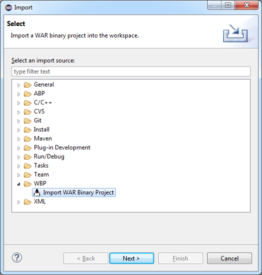
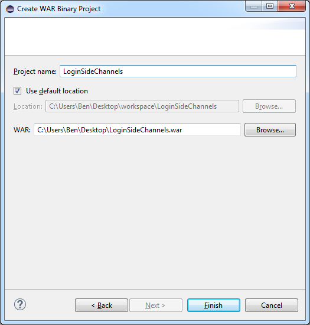

Setup
If you haven't already, install the WAR Binary Processing plugin into Eclipse.
Configuration
A JSP file cannot be directly converted to Jimple, the JSP files must be translated (precompiled) to Java Class files first. AtlasWBP uses a configurable ANT task to precompile the JSPs to Class files given an appropriate translator (i.e. Tomcat Server). After the Ant build task has completed the directory tree will look something like the following.
|-META-INF
|---MANIFEST.MF
|-WEB-INF
|---classes
|-----com
|-------example
|---------demo
|-----------SomeObject.class
|-----org
|-------apache
|---------jsp
|-----------default_jsp.class
|-----------...
|---lib
|-----mysql-connector-bin.jar
|-css
|--..
|-img
|--..
|-js
|--..
|-myjsps
|---default.jspTo clearly represent the application byte code in the project the contents of the classes directory are compressed into a single classes.jar JAR file at the root of the WEB-INF directory. The AtlasWBP plugin then converts the classes.jar file to Jimple using Soot and writes the resulting Jimple source to a new WEB-INF/jimple directory. These contents are included in an Eclipse Java project file that is indexable by Atlas for Jimple.
Since the implementation specific classes for each translator are not included in compiled WAR file, you must provide them and an Ant task to precompile the WAR with the dependent classes in order for the AtlasWBP plugin to decompile the WAR completely. The required support files for the current Tomcat releases (6, 7, and 8 at the time of this writing) are available below, if you don't care about the specifics of which translator the WAR will run on then just use one of the provided support packages.
- apache-tomcat-6.0.44-translator-support.zip
- apache-tomcat-7.0.63-translator-support.zip
- apache-tomcat-8.0.24-translator-support.zip
Before processing a WAR binary, you should remember to change your translator preferences by navigating in Eclipse to Eclipse->Preferences...->WBP. Select the location of the translator directory and the ANT build task. The build task file for each of the provided Tomcat translators is included as the compile-jsp.xml file.
Older versions of Tomcat can be found in the archives for major versions 6, 7, and 8. IBM's Websphere has not been tested but a precompilation build task should be straightforward enough (see ref1, ref2, ref3).
Processing a WAR
To process a WAR file simply use the WAR Binary Project import wizard. In Eclipse navigate to File->Import->WBP->WAR Binary Project. Note that information, warnings, and errors will be reported to the Eclipse Error Log (navigate to Window->Show View->Error Log.
A sample WAR file for a vulnerable webserver application can be found at https://github.com/benjholla/LoginSideChannels.
